Purpose
This catalog defines the user scenarios for the JFT Skills Development Platform (JFT SDP) MVP release. It is scoped to the four MVP scenarios that constitute the complete functional scope of the first production deployment.
The MVP objective is to deploy the existing v1 proof-of-concept codebase (Cicada) to a production-quality, scalable infrastructure with a polished UI, accessible outside the WGU intranet via LTI 1.3 single sign-on. No new features, adaptive logic changes, or coaching algorithm modifications are in scope for this release.
Each of the four scenarios is self-contained. Each represents a distinct student profile interacting with the Coding Coach for the first time (SC-MVP-01, 02, 03) or returning after a break (SC-MVP-04). Every scenario begins from the LMS course page and includes its own complete LTI launch, diagnostic or re-assessment, and coaching flow.
13 Learning Objective Sub-Sections
The coaching structure for this release is defined by these 13 sub-sections, inherited from the v1 Cicada codebase:
First Launch of the Coding Coach
Context
Sally is an enrolled WGU student working through E010: Foundations of Programming (Python). The JFT SDP coding coach is available to her as a supplemental practice tool via a resource link in the course she can click at any time. It does not replace any formative opportunity or high-stakes course assessment. Sally has no prior Python knowledge. She clicks the Coding Coach link for the first time.
Trigger
Sally clicks the "Coding Coach — Python" resource link in E010. The LTI 1.3 link launch completes, WGU SSO confirms her identity silently (no separate login prompt), and the coaching platform opens in a new browser tab.
Sally is already signed into her WGU course (E010: Foundations of Programming — Python). The LMS displays a mock textbook page for Module 1: Python Basics with course navigation in a left sidebar. The sidebar includes course modules (Python Basics, Control Flow, Functions, Data Structures), supplemental resources (Course Textbook, Video Lectures), and a highlighted "Coding Coach — Python" link under Practice Tools. A brief description reads: "AI-powered Python practice. Launches via LTI in a new tab. No separate login required." Sally clicks the Coding Coach link.
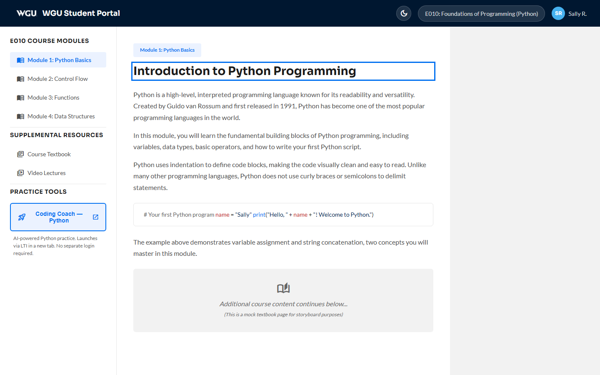
The Coding Coach opens in a new browser tab. The entry screen displays a badge ("Supplemental Practice Tool"), the heading "Coding Coach — Python Foundations", and a plain-language description. A "Begin Diagnostic" button is the primary CTA with a note "(Takes about 5-8 minutes)." Trust signals appear below: "Secured via WGU SSO," "WCAG 2.2 AA," "Works on any device." The right side lists all 13 practice areas. No tutorial is required.
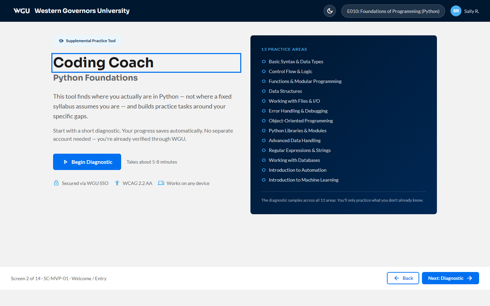
The platform presents a short diagnostic — LLM-generated questions sampling across all 13 sub-sections. The first screen shows Question 3 of 10, sub-section "Basic Syntax & Data Types," with a progress bar at 30%. The AI-generated prompt asks Sally to define and use variables in Python. A dark-themed code editor provides space for her response. A "Need a Hint?" link and "Submit Answer" button are available.

Question 7 of 10, sub-section "Control Flow & Logic" at 70%. The prompt asks Sally to write a Python function called check_grade that takes a numeric score and returns "Pass" or "Fail." Questions are calibrated for a student with zero prior Python experience.

Sally completes the diagnostic. The results screen displays "We've established your starting point." Her results show no measurable prior knowledge across any sub-section. The baseline is stored against Sally's WGU student ID via LTI 1.3. All 13 sub-sections are listed as chips. A "View Your Progress Map" CTA leads to the next screen.
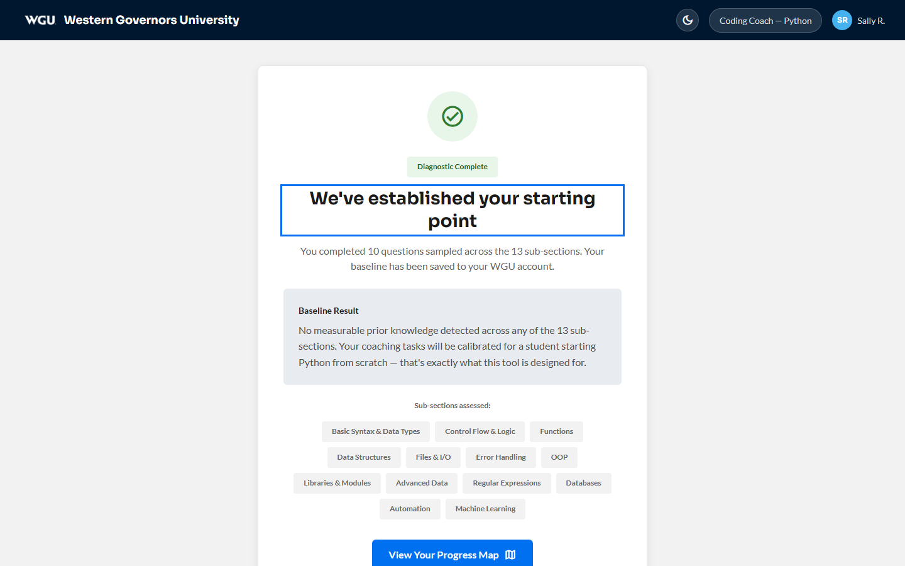
The progress map shows "13 sub-sections · 0 mastered · 13 to explore." All show "Not Started." Basic Syntax & Data Types is highlighted as the "Recommended starting point." Sally can "Start Coaching" or "Return to Course Textbook."
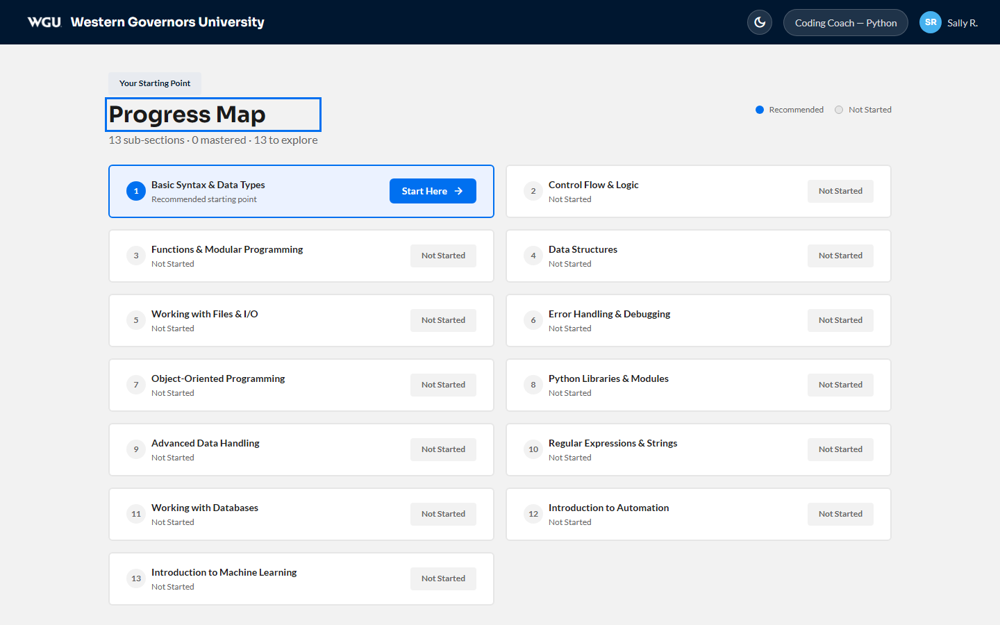
Sally is routed to "Variables & Assignment" in Basic Syntax & Data Types. The AI coaching prompt introduces variables and asks Sally to create a student_name variable. A tip box provides guidance. The response area includes a code editor, "Submit Answer," "Need a Hint?" link, and "Save & Exit" ghost button.
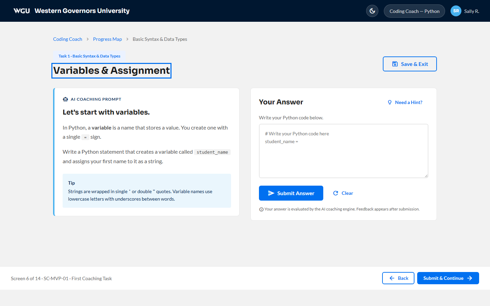
Sally closes the tool. The confirmation card shows: sub-section (Basic Syntax & Data Types), tasks completed (1), sub-sections unlocked (1 of 13), session duration (14 min), resume point (Variables & Assignment — Task 2). "Return to E010 Course" and "View Progress Map" links are available. If Sally exits mid-task, she resumes at the last completed task boundary on her next launch.
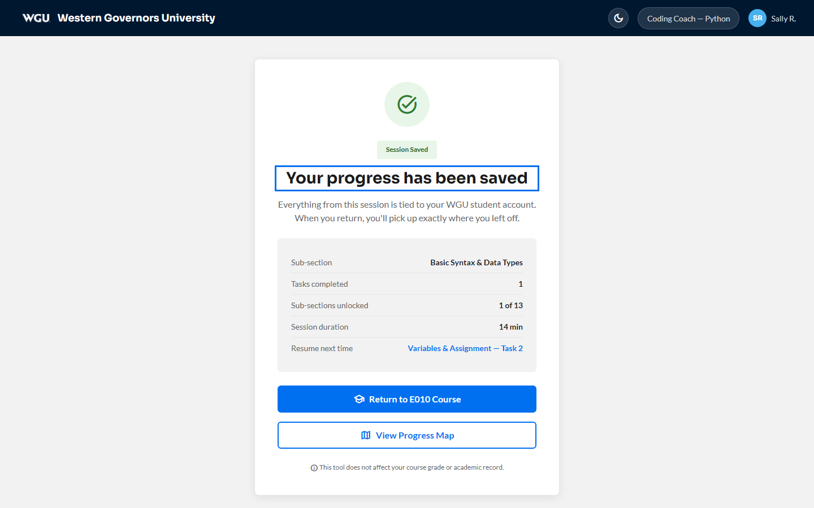
Expected Outcome
- LTI 1.3 basic launch completes without a separate login prompt.
- The diagnostic samples across all 13 SDP sub-sections.
- A coaching baseline is stored against Sally's WGU student ID via LTI 1.3.
- Sally is routed to an appropriate first coaching task based on diagnostic results.
- Session progress is saved on exit. On re-launch, Sally resumes at the last completed task boundary.
- All screens meet WCAG 2.2 AA and are navigable by keyboard and screen reader.
Notes for JFT
- The coding coach does not generate grades or feed passback to the LMS. WGU is using basic LTI 1.3 (no LTI Advantage).
- The platform must expose a stable launch URL that does not change when course structure is reorganized.
- Diagnostic question generation relies on LLM-inherent variation to prevent identical question sets.
- FERPA requirements apply to all stored student interaction data from first launch.
Progressive Coaching with Targeted Feedback
Context
Sally has partial Python knowledge — she understands basic syntax but has gaps in data structures and more advanced topics. She accesses the Coding Coach for the first time. This scenario demonstrates progressive coaching with targeted feedback when a student answers incorrectly, including gap verification and difficulty advancement.
Trigger
Sally clicks the "Coding Coach — Python" resource link in E010. The LTI 1.3 launch completes, WGU SSO confirms her identity silently, and the coaching platform opens in a new browser tab.
Sally is signed into E010. The LMS displays the mock textbook page with the "Coding Coach — Python" link. Sally clicks the link.

The Coding Coach opens with the entry screen: "Begin Diagnostic" CTA, trust signals, and 13 practice area list. Sally clicks "Begin Diagnostic."
Question 3 of 10, "Basic Syntax & Data Types" at 30%. Prompt asks Sally to define and use variables.

Question 7 of 10, "Control Flow & Logic" at 70%. Prompt asks Sally to write a check_grade function.
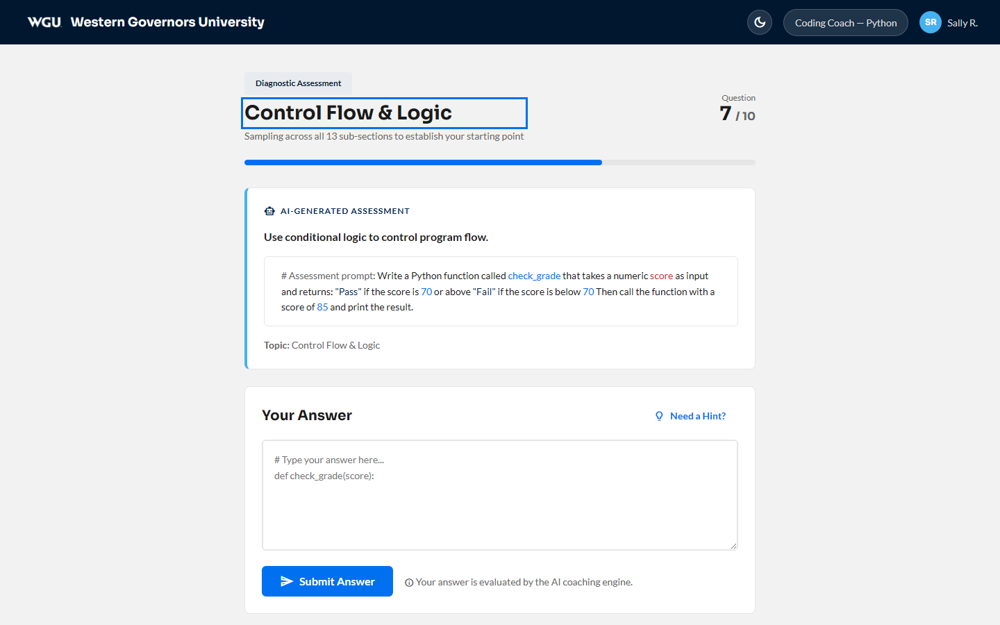
"Data Structures: Lists, Tuples, Sets, Dictionaries" — a more advanced diagnostic question reflecting Sally's partial knowledge.
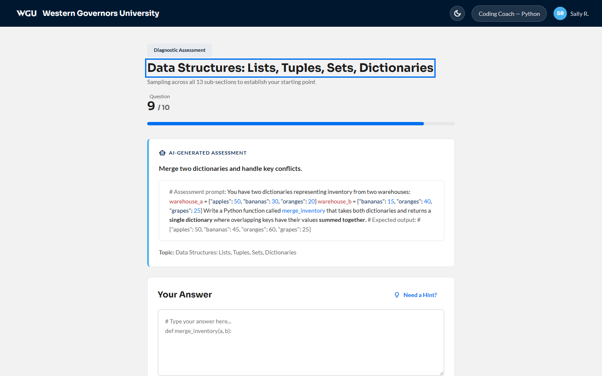
Sally's diagnostic reveals partial knowledge. The progress map shows: "13 sub-sections · 1 in progress · 12 not started." Data Structures is marked "In Progress — Foundational level." Basic Syntax shows "Completed diagnostic baseline."
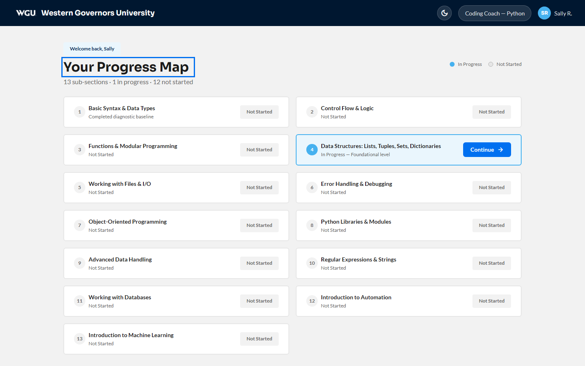
The AI prompt asks for the Python syntax to append 'grape' to a list. Sally answers correctly with fruits.append('grape'). The platform confirms with specific feedback and notes difficulty will increase.
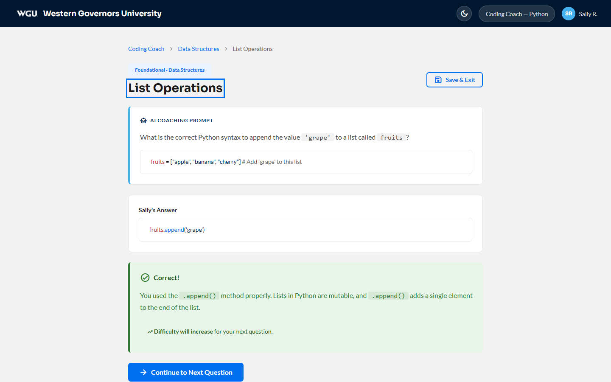
At increased difficulty on dictionary iteration, Sally answers incorrectly — her code prints the entire dictionary instead of individual key-value pairs. The platform generates targeted feedback identifying the specific error and provides a concrete correct example using .items() and f-string formatting. "Try Next Question" at same difficulty level.
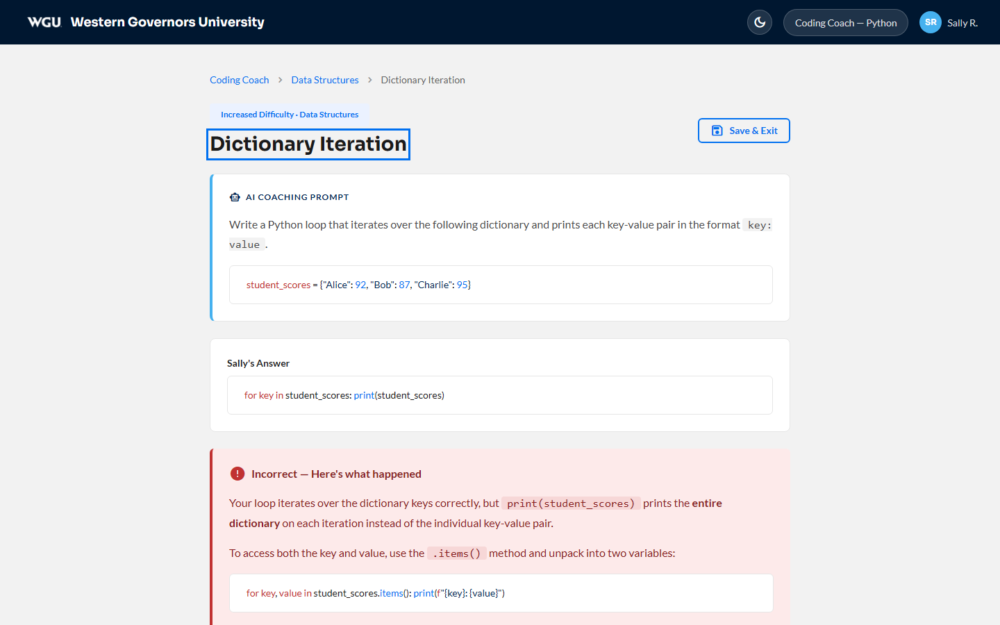
A new question at the same difficulty verifies gap resolution. Sally is asked to filter the student_scores dictionary, printing only students who scored 90 or above.
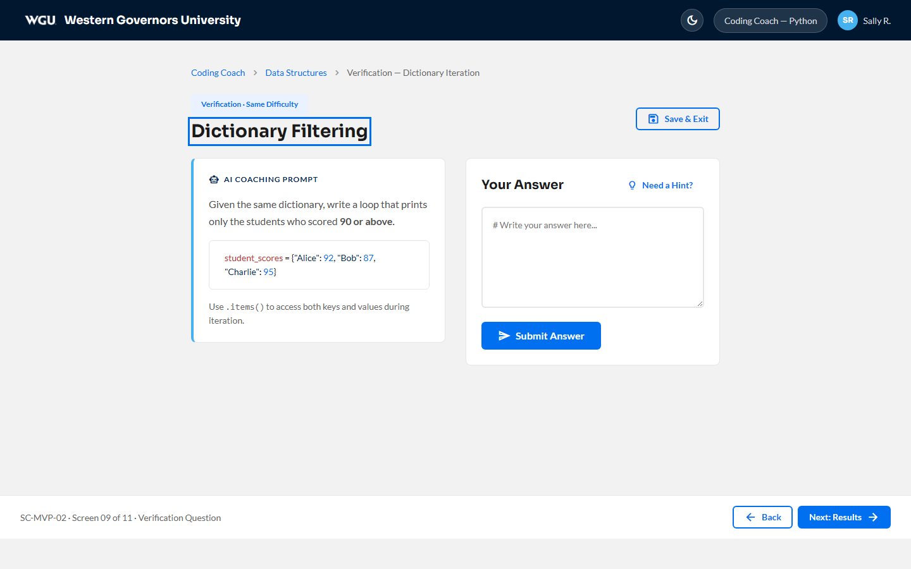
Sally answers correctly. "Verification Passed — Gap resolved — difficulty advancing." Progression: Foundational → Intermediate → Advanced. Identical questions are never repeated within a session.
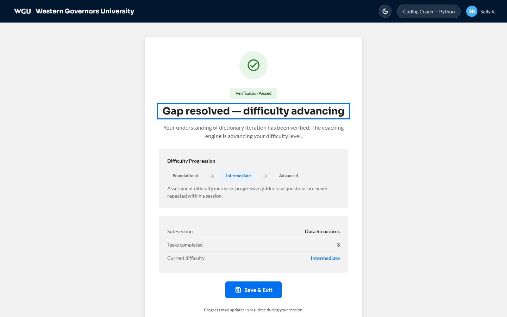
Confirmation: Data Structures, 4 tasks completed, Intermediate difficulty, 2 of 13 sub-sections explored, 22 min session, resume at Dictionary Comprehensions — Task 6.
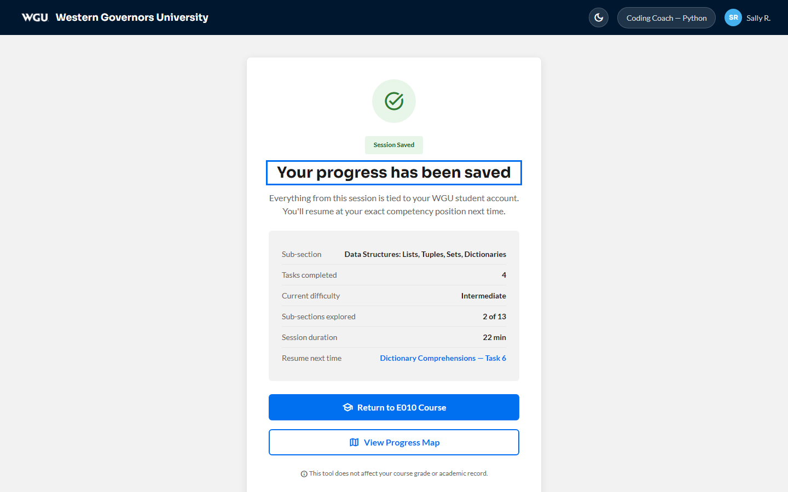
Expected Outcome
- Difficulty increases progressively and does not repeat identical questions within a session.
- Incorrect-answer feedback is specific to Sally's actual error, not generic.
- Session progress is fully preserved. Sally resumes at her exact competency position.
- Progress map updates in real time.
- Verification questions confirm gap resolution before difficulty advances.
Notes for JFT
- Feedback specificity is the primary quality risk. Templated responses do not satisfy this requirement.
- Difficulty ceiling per sub-section is inherited from Cicada v1 as-is.
- FERPA requirements apply. MVP stores competency-level indicators, not exact Q&A state.
Experienced Developer Fast-Tracks Through Coaching Baseline
Context
Sally is a software developer enrolled in E010 with several years of professional Python experience. She accesses the coding coach expecting it to recognize her existing skills quickly so she is not required to work through content she does not need.
Trigger
Sally clicks the "Coding Coach — Python" resource link in E010. The LTI 1.3 launch completes and the diagnostic opens.
Sally is signed into E010. She clicks the "Coding Coach — Python" link.

The entry screen with "Begin Diagnostic" CTA. Sally clicks to start.
Question 3 of 10, "Basic Syntax & Data Types." Sally's professional experience means she completes this quickly.
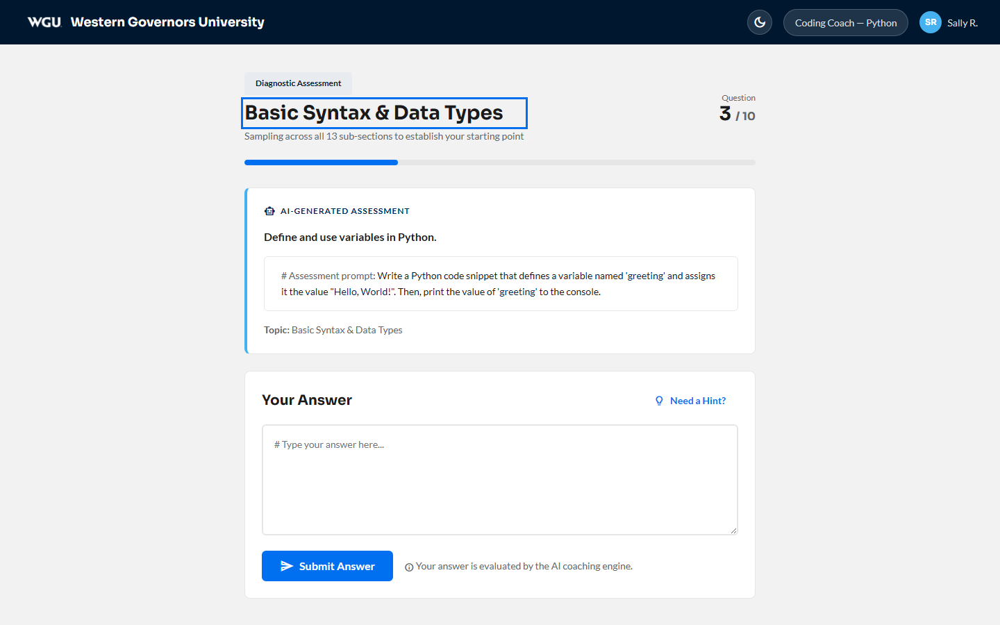
Question 7 of 10, "Control Flow & Logic." Prompt asks to write a check_grade function.

"Data Structures: Lists, Tuples, Sets, Dictionaries" — advanced diagnostic question.
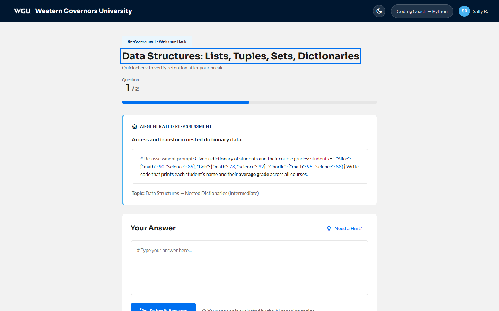
Question 8 of 10, "Advanced Data Handling" at 80%. Sally writes a list comprehension with compound filtering. The platform responds: "Your response demonstrates fluent use of list comprehensions. This is characteristic of an experienced Python developer. The diagnostic is calibrating your baseline."
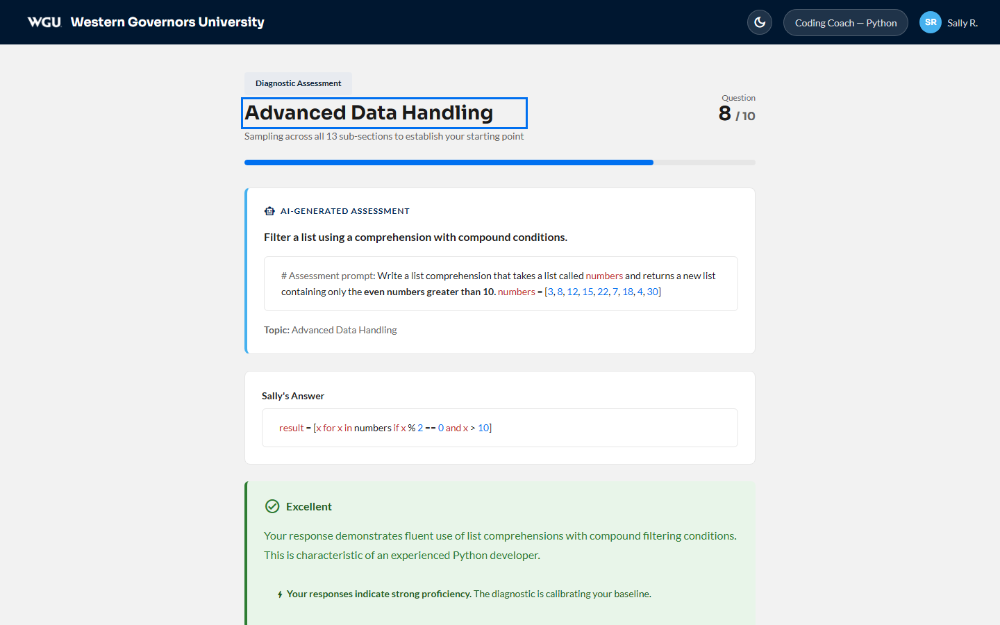
"Strong baseline detected." 12 of 13 sub-sections show mastery. Functions & Modular Programming requires hands-on verification. "Begin Verification Task" CTA.
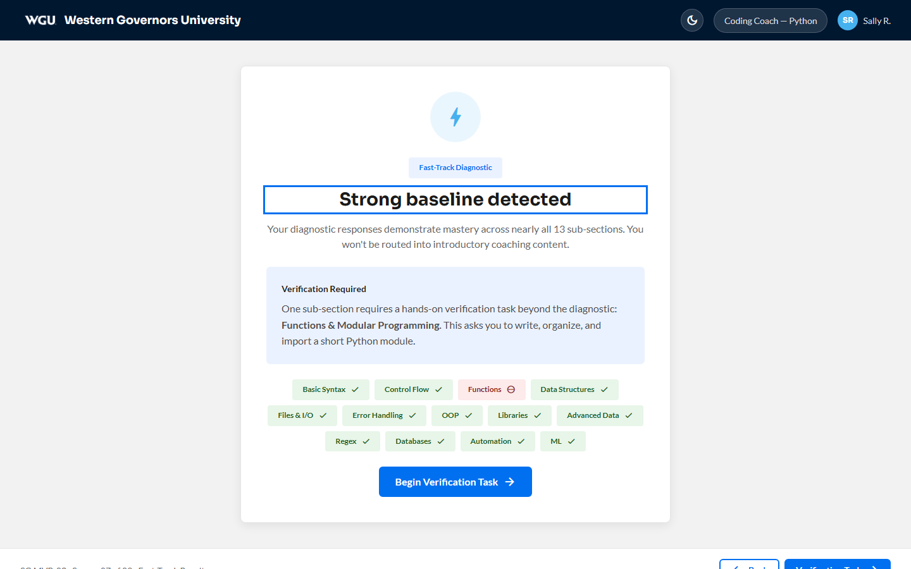
Sally must create a math_utils.py module with add and multiply functions, a __name__ == "__main__" guard, and demonstrate importing. Alert: "Your code is evaluated by the AI as text. There is no in-browser code execution environment."
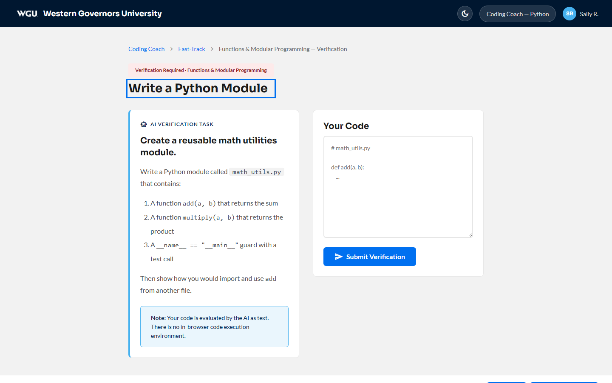
"No coaching gaps identified. Proficiency confirmed across all 13 sub-sections." Options: continue practicing, select any sub-section for targeted practice, or return to E010.
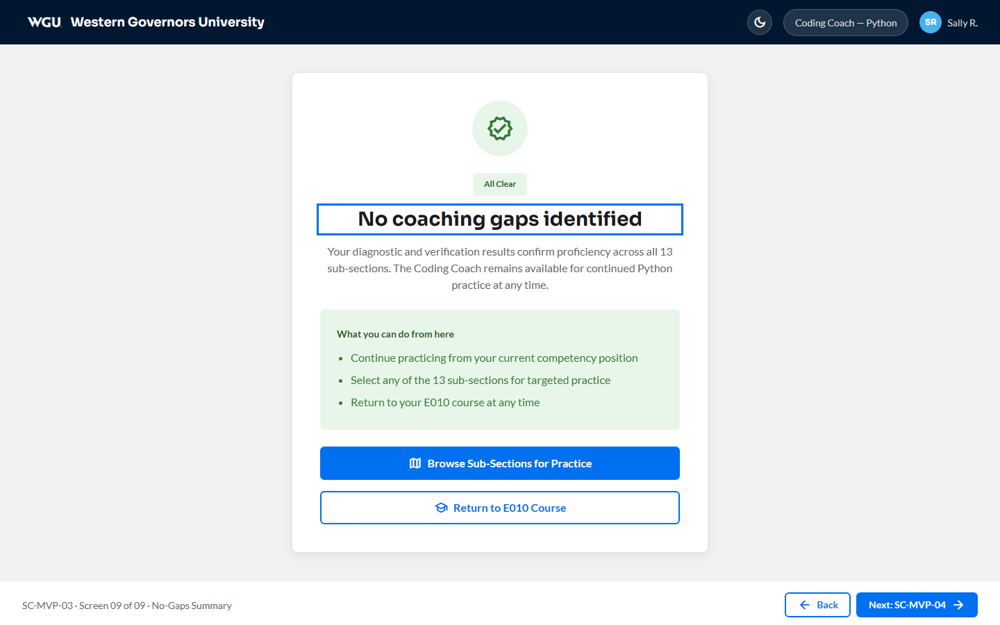
Expected Outcome
- Sally is not routed into coaching content for sub-sections where mastery was demonstrated.
- At least one sub-section requires verification beyond the diagnostic.
- The full fast-track path is achievable in one short session.
- From the no-gaps summary, Sally can browse sub-sections for targeted practice.
Notes for JFT
- Fast-track threshold logic is inherited from Cicada v1. JFT must document the threshold parameters.
- The MVP does not include in-browser code execution. All code is evaluated by the LLM as text.
- Student-directed sub-section selection is supported in the MVP.
Student Returns and Resumes a Prior Session
Context
Sally worked through two coaching sessions making intermediate progress in two sub-sections. She paused for several weeks. Session progress is preserved and she resumes at the last completed task boundary. A brief re-assessment verifies retention before coaching resumes at her prior difficulty level.
Trigger
Sally clicks the "Coding Coach — Python" resource link in E010 after a multi-week break. The LTI 1.3 launch completes.
Sally is signed into E010. She clicks the "Coding Coach — Python" link.

"Welcome back, Sally." Session snapshot: Last session (3 weeks ago), Active sub-section (Data Structures at Intermediate), Resume point (Dictionary Iteration — Task 5), Sub-sections explored (2 of 13). Full progress map with all 13 sub-sections and current status. "Resume Coaching" and "Return to Course" buttons available.
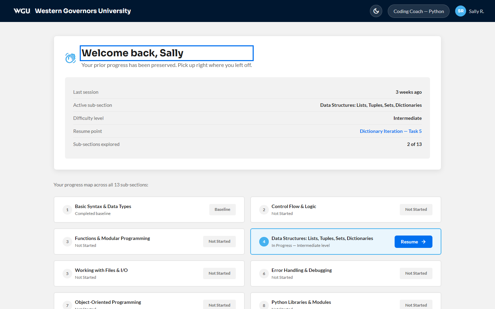
Brief re-assessment to verify retention. Question 1 of 2, "Data Structures" with badge "Re-Assessment · Welcome Back." Prompt: access and transform nested dictionary data — print each student's name and average grade. Topic: "Data Structures — Nested Dictionaries (Intermediate)."
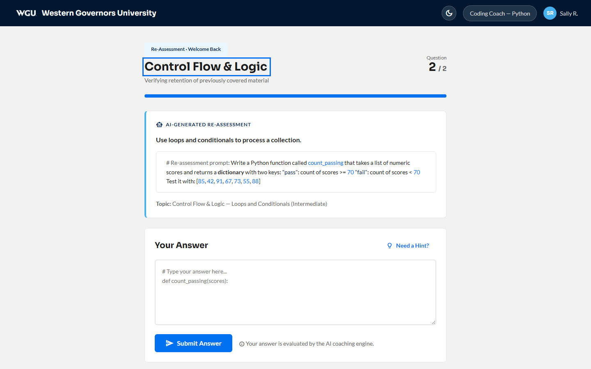
Question 2 of 2, "Control Flow & Logic" at 100%. Write a function count_passing that returns pass/fail counts from a list of scores. Topic: "Control Flow & Logic — Loops and Conditionals (Intermediate)."

Sally picks up Data Structures at Intermediate. Breadcrumb: "Coding Coach > Data Structures > Dictionary Operations." Prompt: filter a dictionary by computed criteria — return students above the class average. Tip: use sum() and len() for the average.
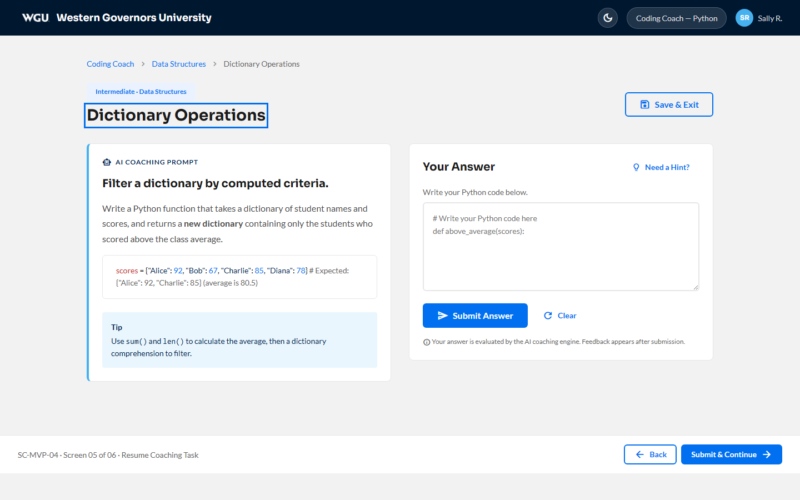
Data Structures, 2 tasks, Intermediate, 2 of 13 explored, 18 min, resume at Dictionary Operations — Task 8.
Expected Outcome
- Prior progress is preserved and surfaced immediately. No restart from initial diagnostic.
- Returning-learner screen shows last session date, active sub-section, difficulty, and resume point.
- Brief re-assessment (2 questions) verifies retention before coaching resumes.
- Coaching resumes at last completed task boundary at prior difficulty level.
- If performance indicates decay, difficulty adjusts downward per Cicada v1 logic silently.
Notes for JFT
- Session persistence is a foundational MVP requirement. Lost progress = tool failure.
- Configurable re-assessment thresholds are a future capability. The brief re-assessment shown verifies retention only.
- Session persistence must handle gaps of any length. FERPA requires 3-year data retention.
- JFT must document how the v1 difficulty algorithm handles sustained regression patterns.
Storyboard Reference
The authoritative UX reference is the v3 HTML storyboard (JFT_SDP_SC-MVP-01_Storyboard_v3.html), containing 34 interactive screens across all four scenarios.
| Scenario | Screens | Screen IDs |
|---|---|---|
| SC-MVP-01 | 8 | 1, 2, 3, 18, 4, 5, 6, 7 |
| SC-MVP-02 | 11 | 15, 25, 26, 27, 31, 8, 19, 9, 10, 20, 21 |
| SC-MVP-03 | 9 | 16, 28, 29, 30, 33, 22, 11, 12, 13 |
| SC-MVP-04 | 6 | 17, 14, 34, 15*, 23, 24 |
| Total | 34 |
Design System Compliance
- Typography: Sora (headings), Lato (body, code blocks). No monospace fonts.
- Colors: Deep Navy (#001730), Brand Blue (#0055D4), Sky Blue (#4DB5E8), Accent Red (#C13232), Ice Blue (#EEF6F9).
- Layout: 12-column grid, 8-point spacing, Paragon component classes.
- Accessibility: WCAG 2.2 AA, semantic HTML, ARIA labels, keyboard navigation.
Document Control
| Version | Date | Status | Changes |
|---|---|---|---|
| 1.0 | 30 Mar 2026 | Superseded | Initial MVP scenario catalog shared with JFT. |
| 1.1 | 30 Mar 2026 | Superseded | Added Codebase Reference section. |
| 1.2 | 01 Apr 2026 | Draft | Aligned with v3 storyboard (34 screens). Self-contained scenarios. SC-MVP-04 re-assessment. Typography corrected to SDP Design System v1.2. |